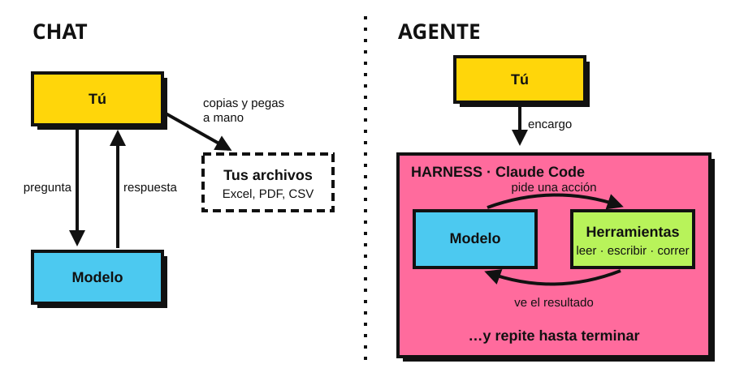
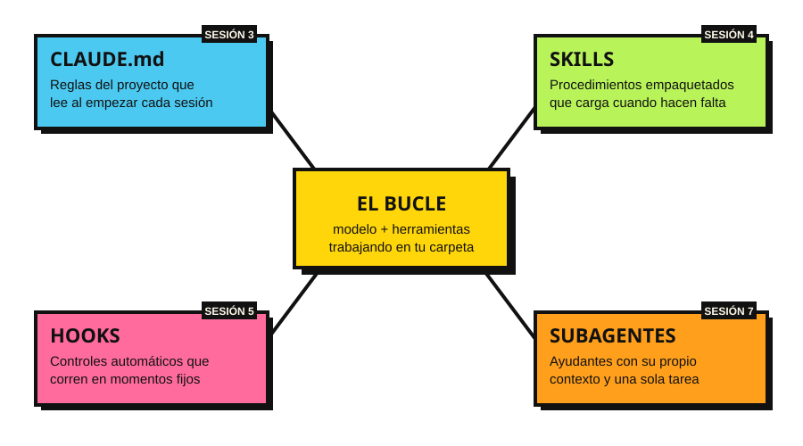

🐴
grill-me · Matt Pocock
El agente te interroga, pregunta por pregunta, hasta que el plan no tenga huecos. Con ella se diseñó este curso.
/plugin install mattpocock-skills@claude-plugins-official
Un curso de tecnología agéntica para periodistas. Cada participante termina con un proyecto propio de datos, hecho con un agente de IA y publicado en una página web.
El curso enseña a trabajar con un agente que programa por ustedes, y sobre todo a dirigirlo, revisarlo y dudar de él.
El ejemplo de práctica son las versiones estenográficas de las mañaneras. Es solo el pretexto: cada concepto se aplica igual a contratos, presupuestos, cifras de seguridad o cualquier otro dato público.

En el chat, tú eres quien mueve los archivos. Con un agente, el harness (aquí, Claude Code) deja que el modelo lea, escriba y corra programas en tu carpeta, una y otra vez, hasta terminar el encargo.

El curso arma estas piezas una por sesión, siempre sobre el mismo proyecto.
En cuatro años, la pregunta pasó de «¿cómo le pido algo al modelo?» a «¿en qué entorno lo pongo a trabajar?». Cada etapa contiene a la anterior: no la reemplaza.
Agente = Modelo + Harness
El modelo es el mismo para todos. Lo que distingue a un buen agente de uno malo es el harness: qué herramientas tiene, qué puede tocar, qué reglas lee, qué lo detiene cuando se equivoca.
Una forma útil de pensarlo (Birgitta Böckeler, en el sitio de Martin Fowler) son guías y sensores:
| Tipo | Qué hace | En este curso |
|---|---|---|
| Guías | Orientan al agente antes de actuar. | CLAUDE.md, skills, modo plan, permisos |
| Sensores | Le avisan después de actuar que algo salió mal, para que se corrija. | Hooks, validadores, pruebas, Git |
Ese es el trabajo del periodista con un agente: diseñar sus guías y sus sensores. Es oficio editorial, no programación.
Los modelos cobran por tokens: pedazos de texto de unas pocas letras. Se paga lo que el modelo lee (entrada) y lo que escribe (salida). Hay dos formas de pagar:
| Modelo (API) | Entrada · USD por millón de tokens | Salida · USD por millón de tokens |
|---|---|---|
| Haiku 5.5 · rápido y barato | $0.10 | $0.50 |
| Sonnet 5.5 · el de uso diario | $2 | $10 |
| Opus 5.5 · el más capaz de uso general | $4 | $20 |
Precios de lista de Anthropic, octubre de 2026. El procesamiento por lotes (sin prisa) cuesta la mitad. claude.com/pricing
En cada vuelta del bucle, el agente vuelve a leer toda la conversación: instrucciones, archivos abiertos y resultados anteriores. Una hora de trabajo puede mover millones de tokens.
Por eso importan las mismas cosas que en el harness: un contexto limpio (/clear entre tareas), subagentes para tareas que leen mucho, y el modelo barato para el trabajo repetitivo.
No todo hay que escribirlo desde cero. Hay skills publicadas por otras personas que se instalan como plugins: paquetes que pueden traer skills, comandos y hooks.
El agente te interroga, pregunta por pregunta, hasta que el plan no tenga huecos. Con ella se diseñó este curso.
/plugin install mattpocock-skills@claude-plugins-official
Una metodología completa: primero lluvia de ideas, luego plan escrito, luego ejecución por pasos con verificación. Evita que el agente se lance a hacer sin pensar.
/plugin install superpowers@claude-plugins-official
Convierte al agente en un «programador senior flojo»: la solución más corta que funcione. Contra la tendencia de los agentes a construir de más.
/plugin marketplace add DietrichGebert/ponytail /plugin install ponytail@ponytail
Cuidado: una skill son instrucciones que su agente va a seguir, y un plugin con hooks corre programas en su computadora. Instalen solo de fuentes que conocen, y lean el SKILL.md antes de usarlo, como leerían un documento antes de citarlo.
Cada sesión gira en torno a un concepto. Da clic en el título para abrir su presentación.
Manual para Windows y Mac, más consulta abierta para quien se atore.
Claude Code, Git, Python y VS Code funcionandoQué es un harness y cómo llegamos de prompt a context a harness engineering. Qué cuesta un agente, en tokens. Qué datos salen de su máquina.
Práctica: le piden lo mismo al chat y a Claude Code, y comparan.
Su primer encargo a un agenteVS Code, Git y GitHub como red de seguridad.
Práctica: crean un repositorio, el agente rompe algo y lo revierten.
Un repositorio propio en GitHubCómo plantear el encargo, CLAUDE.md como reglas permanentes, pedir un plan antes de ejecutar.
Práctica: el agente descarga y ordena un mes de mañaneras siguiendo sus reglas.
Una tabla que abren en ExcelEmpaquetar un procedimiento que se repite. Skills de la comunidad: grill-me, superpowers y ponytail.
Práctica: escriben una skill que cuenta quién pregunta y de qué tema.
Su primera skillAutomatizar controles y aprender a dudar del agente. Publicar en GitHub Pages.
Práctica: un hook que valida los datos, y publican el ejemplo.
Una página web publicadaCada quien muestra su proyecto, solo entre el grupo.
Práctica: su tema, con datos públicos.
Su proyecto propio, publicadoRepartir trabajo en paralelo y separar roles.
Práctica: un orquestador extrae 5 afirmaciones de una conferencia; un subagente verifica cada una y un subagente editor revisa lo que trajeron.
Una tabla de lo verificado, lo falso y lo que no se pudo verificarEl proyecto propio se elige entre las sesiones 3 y 4, y se trabaja entre sesiones con acompañamiento.
Diez artículos que explican de dónde salen los agentes. No hace falta leerlos para el curso; están aquí para quien quiera ir a la fuente. Todos están abiertos en arXiv.
Vaswani et al. · Google · 2017
Presenta el Transformer, la arquitectura detrás de todos los modelos actuales, Claude incluido. Su idea central, la «atención», permite que cada palabra se relacione con todas las demás del texto a la vez. Es el origen de la «ventana de contexto».
Yao et al. · Princeton y Google · 2022
El modelo alterna entre razonar (escribir qué piensa hacer) y actuar (usar una herramienta), y ajusta su plan según lo que observa. Es el bucle del diagrama «Chat vs. agente», y la base de casi todos los agentes de hoy.
Schick et al. · Meta · 2023
Un modelo aprende por sí mismo cuándo conviene llamar a una herramienta externa (calculadora, buscador, calendario) y cómo usar la respuesta. Abre la era del uso de herramientas: el agente ya no tiene que saberlo todo, puede consultarlo.
Park et al. · Stanford y Google · 2023
25 agentes viven en un pueblo simulado: recuerdan, reflexionan, planean su día y organizan una fiesta sin que nadie se lo ordene. Muestra el peso de la memoria: qué guarda el agente y qué recupera en cada momento.
Shinn et al. · Northeastern, MIT y Princeton · 2023
Cuando el agente falla, escribe en palabras qué salió mal y usa esa nota en el siguiente intento. Aprende sin reentrenar el modelo. Es la idea detrás de los sensores: un hook que le devuelve el error al agente para que se corrija.
Yao et al. · Princeton y Google DeepMind · 2023
En lugar de seguir una sola línea de razonamiento, el modelo explora varias rutas, las evalúa y retrocede si una no lleva a nada, como un árbol de búsqueda. Explica por qué pedir un plan antes de ejecutar mejora el resultado.
Shen et al. · Zhejiang y Microsoft Research Asia · 2023
Un modelo de lenguaje funciona como director: entiende la petición, la divide en tareas, elige otros modelos especializados para cada una y junta los resultados. Un antecedente directo de la orquestación de la sesión 7.
Wang et al. · NVIDIA, Caltech y otros · 2023
Un agente explora Minecraft sin fin y guarda cada habilidad que aprende como código reutilizable en una biblioteca de habilidades. Es la misma idea que las skills de la sesión 4: lo que funcionó una vez se empaqueta para la siguiente.
Wu et al. · Microsoft Research y otros · 2023
Varios agentes con roles distintos conversan entre sí para resolver una tarea: uno escribe, otro revisa, otro ejecuta. Es el modelo de reportero y editor del ejercicio de verificación de la sesión 7.
Wang et al. · Renmin University of China · 2023
Un mapa del campo: cómo se construye un agente (perfil, memoria, planeación, acción), dónde se aplica y cómo se evalúa. Buen punto de partida para quien quiera una vista de conjunto.
claude --version, git --version y python --version antes de la sesión 1.Solo datos públicos. En el curso y en el proyecto final.
Lo que se le da a un agente sale de su computadora. La sesión 1 dedica un bloque a qué información sale, cómo revisar la privacidad de su cuenta y cuándo no usar el agente.